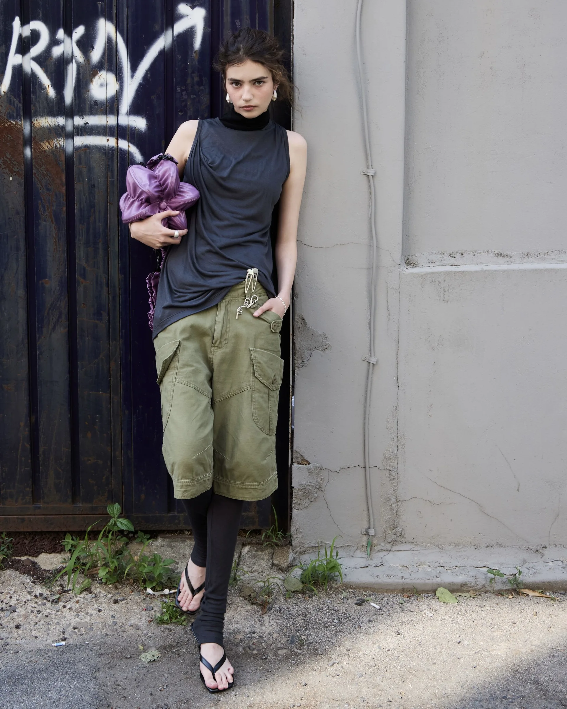

Scout
Board.
A model discovery platform designed to turn a visual catalog into a working lead-generation workflow.

Make the catalog useful for business.
Scout Board needed more than a polished gallery. The product had to present profiles clearly, collect applications and give the team a fast way to manage content and incoming leads.
Show the public product clearly.

One connected workflow.
Public platform
Responsive catalog pages with profile discovery, news and clear application paths.
Admin operations
Telegram-based management for models, content, photos and applications.
Flexible foundation
Local SQLite storage for fast iteration with a documented route to Supabase in production.
From interface to deployment.
I worked across the product surface: responsive frontend, Flask API, persistence, file handling and Telegram integration. The result is a compact system that can be run locally and deployed as a single service.
Design that connects
to real operations.
The project shows how I approach a business website as a product: understand the workflow, make the important action obvious, then build the technical layer that keeps the experience maintainable.
Open live project